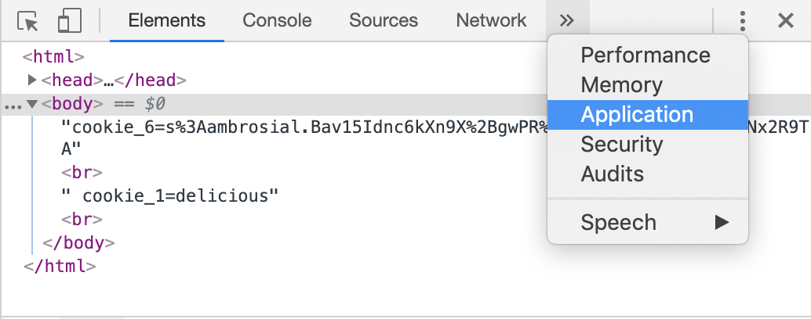
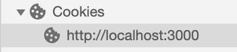
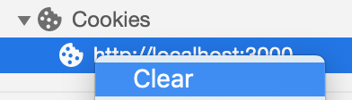
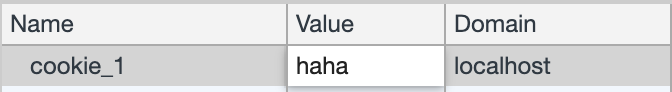

Cookies
Zoals altijd kunnen de oefeningen binnengehaald worden door een git pull te doen.
git pull
of de git repository te clonen als je deze nog niet hebt.
git clone https://github.com/similonap/software_security_2021.git
Wat ga je leren in dit labo?
- Leren met cookies werken met chrome developer tools.
- De verschillende options mogelijk bij cookies begrijpen.
- Wireshark gebruiken om cookies te onderscheppen.
Stappenplan
-
We raden je aan om google chrome te gebruiken voor dit labo. Wens je dat niet te doen zal je voor sommige settings zelf op zoek moeten gaan.
-
Open de terminal in
labo_cookiesvia visual studio code en installeer alle npm dependencies metnpm install -
We hebben voor deze oefening net als vorig labo een webserver in node js geschreven. Je kan deze opstarten met
node http.jsHet certificaat voor deze server is al aangemaakt in deze sessie.
-
Open je browser op het volgende adres:
http://localhost:3000/show_cookiesJe zal daar de melding: 'No cookies... I'm hungry!' krijgen.
De show_cookies pagina zal via javascript code de cookies uitlezen en op je scherm laten zien.
-
Ga daarna naar het adres:
http://localhost:3000/set_cookiesdaar krijg je de melding: 'Cookies set!'. Op dit moment heeft de webserver een aantal cookies gezet. Als je daarna terug naar de show_cookies pagina gaat dan krijg je er een aantal te zien.
Neem screenshot en sleep bestand in het vak hieronder:
-
Open de chrome developer tools via
Ctrl + Shift + I(Windows) ofCmd + Opt + I(MacOS) en ga dan vervolgens naar het tabblad Applicationvervolgens ga je naar Cookies en klik je op
http://localhost:3000Je krijgt dan een lijst van cookies te zien.
Opmerking: als je voor een reden in dit labo terug opnieuw wil beginnen kan je altijd rechter muisklikken en de cookies clearen. Vervolgens ga je terug naar
http://localhost:3000/set_cookiesom ze terug te zetten.Opmerking 2: Negeer tot nader order de cookie connect.sid. Deze komt later aan bod.
-
Tot wanneer blijft cookie_1 geldig?
In een cookie wordt dit het
expiresveld genoemd. De waarde van dit veld is een datum met tijdstip in string vorm. -
cookie_2 zal snel vervallen. Indien je het niet ziet in de chrome developer tools. Ga dan nog eens naar
http://localhost:3000/set_cookiesen dan terug naarhttp://localhost:3000/show_cookies. Binnen de 3 minuten zal cookie_2 altijd vervallen.In een cookie wordt dit het
maxAgeveld genoemd. De waarde van dit veld is het aantal milliseconden dat deze cookie zal blijven leven na het zetten ervan. -
Hoeveel milliseconden zal een maxAge van 3 minuten zijn?
-
Het
HttpOnlyveld op cookie_3 zorgt ervoor dat een cookie niet kan uitgelezen kan worden via javascript. Dit maakt het veilig zodat kwaadaardige scripts het niet kunnen uitlezen.Maar hier een screenshot van en laat zeker zien dat je het HttpOnly vlag hebt gevonden. Sleep het bestand in het vak hieronder:
-
Ga nu naar
https://localhost:3001/hide_me/show_cookiesDaar is de laatste cookie
cookie_5te vinden. Dit is omdat cookie_5 het veldpathop '/hide_me' heeft gezet. Dit betekent dat de url 'hide_me' op zijn pad moet hebben (en alles daar onder) -
Maak een screenshot van de developer tools waar alle 5 cookies op zichtbaar zijn. Sleep het bestand in het vak hieronder:
-
Je kan ook de waarden van de cookies aanpassen in de developer tools door te dubbelklikken op de value van de cookie
Pas alle values aan van de cookies naar eender welke waarde en ga terug naar
https://localhost:3001/hide_me/show_cookiesMaak hier een screenshot van en sleep het bestand in het vak hieronder:
-
Ook de
expiresenmaxAgevan een cookie kan aangepast worden. Zorg ervoor dat cookie_1 en cookie_2 niet meer vervallen. -
Ook het
pathkan aangepast worden. Zorg ervoor dat alle cookies ook zichtbaar zijn ophttps://localhost:3001/show_cookies -
het
HttpOnlyveld en hetsecurekan je jammer genoeg niet aanpassen. Maar zelfs daarvoor bestaat een oplossing:Klik op het lege gebied onder de cookies om een nieuwe cookie aan te maken. En maak een nieuwe cookie aan met de naam cookie_3 en dezelfde waarden als hiervoor. cookie_3 zal dan overschreven worden en het HttpOnly veld zal verdwenen zijn.
-
Maak een screenshot van de
https://localhost:3001/show_cookiespagina (niet de developer tools!!). Sleep het bestand in het vak hieronder:
Alle 5 cookies moeten zichtbaar zijn.
-
Open wireshark op de loopback interface (zie vorig labo) en probeer de cookies te vinden via wireshark. Maak een screenshot en sleep het bestand in het vak hieronder:
Tip: Herinner dat je https paketten niet kan uitlezen.
-
Vooraleer verder te gaan ga eerst naar de pagina
https://localhost:3001daar zal je
Unauthorizedterug krijgen omdat je nog moet inloggen. -
Je kan inloggen door naar
https://localhost:3001/login?username=admin&password=adminte surfen. Je zal hier
login success!te zien krijgen. -
Ga terug naar
https://localhost:3001je zal nu iets anders te zien krijgen dan hiervoor omdat je nu ingelogd bent.
-
Ga nu kijken in de developer tools window en je zult de session id daar terug vinden onder
connect.sid. Deze zal overeen komen met de session id op de server en zo weet de server welke gebruiker jij bent.Maak een screenshot en sleep het bestand in het vak hieronder:
-
Als je nu de value van
connect.sidveranderd naar iets anders en dan de webpagina refreshed dan zal je zien dat je weer uitgelogd bent. Waarom? -
Print deze pagina af als PDF en slaag deze op als
naam_voornaam_labo_cookies.pdf.Stuur deze vervolgens in via digitap!